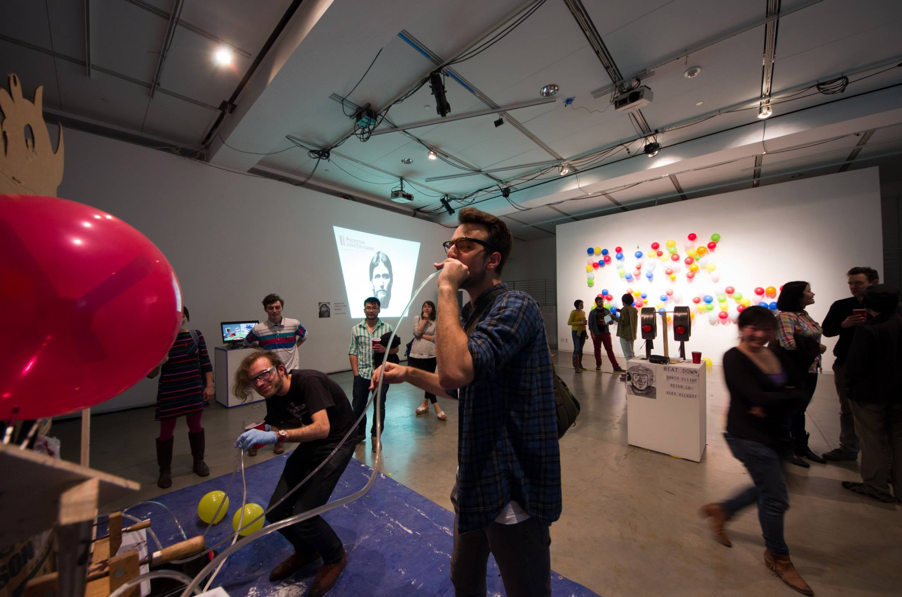
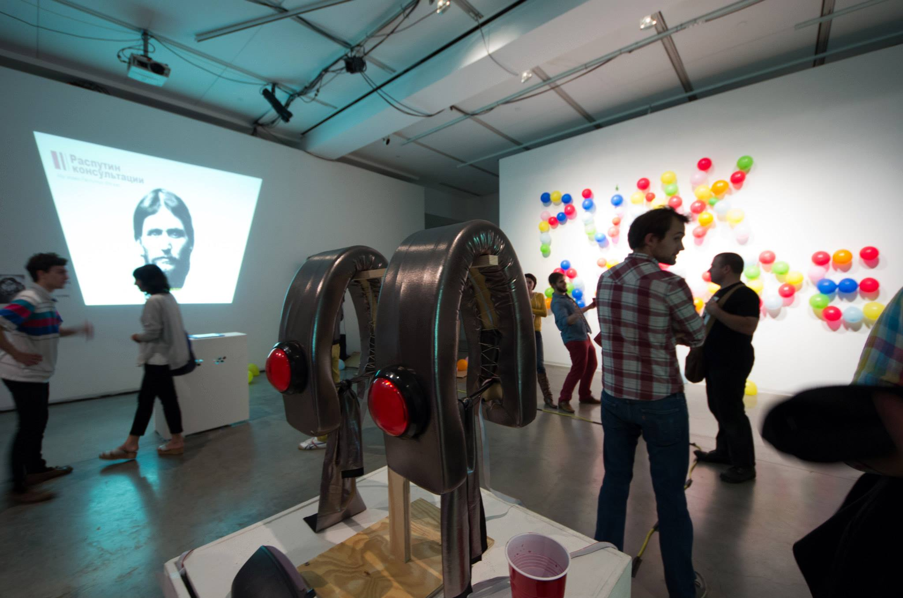
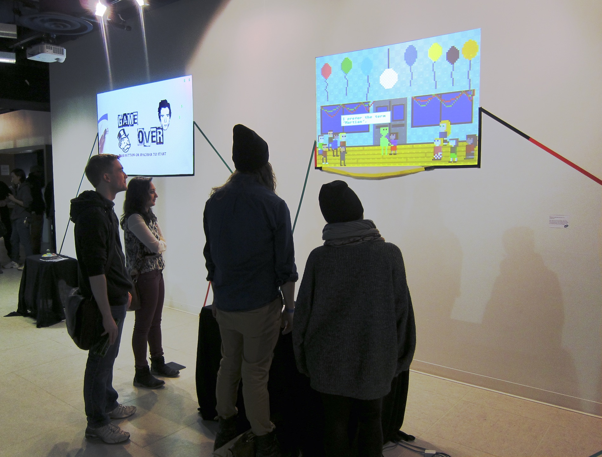
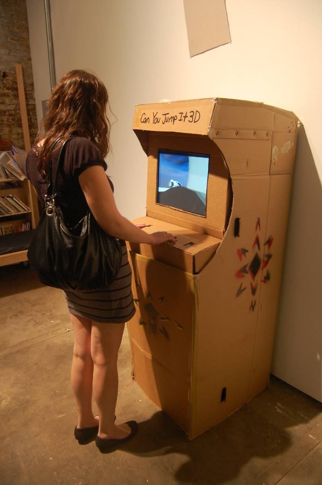
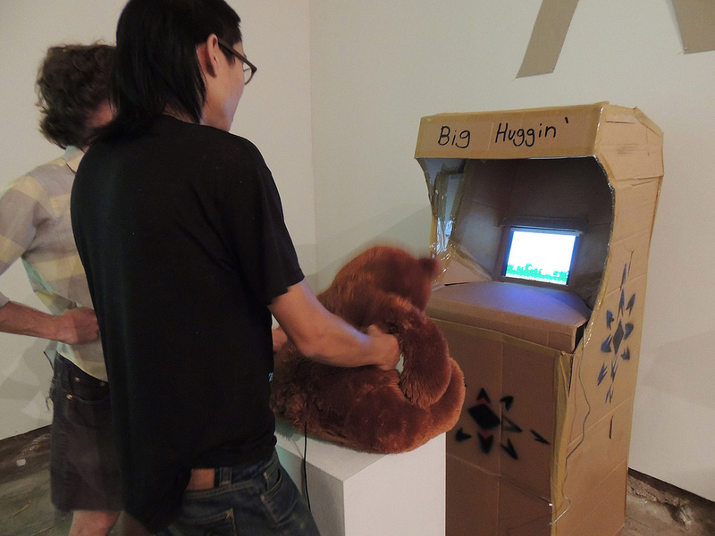

Co-curated with
Sarah Brin
Punk Arcade is a traveling DIY games exhibit presenting works that are independent, minimal, offbeat, and sometimes gritty. All the featured games have been constructed rapidly, by one person or a small team, outside of the AAA world of mainstream videogames. These works are the product of increased access to game-making software tools which have opened up the field of game-making to publics who had previously never had the necessary skills. These new designers, or “video game zinesters” (as dubbed by game designer Anna Anthropy), are shifting the pre-existing paradigm for the creation and distribution of games by creating radical work that can be distributed online for free.
Punk Arcade existed as a
blog and in 3 exhibition events: at Little Berlin art space in 2012, Vector Festival in 2013, and UCLA GameLab in 2014.



